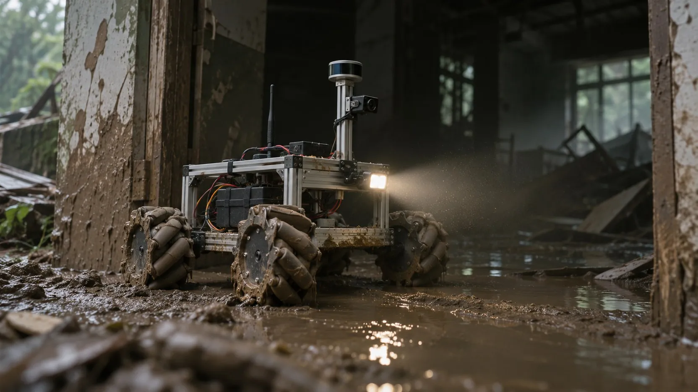
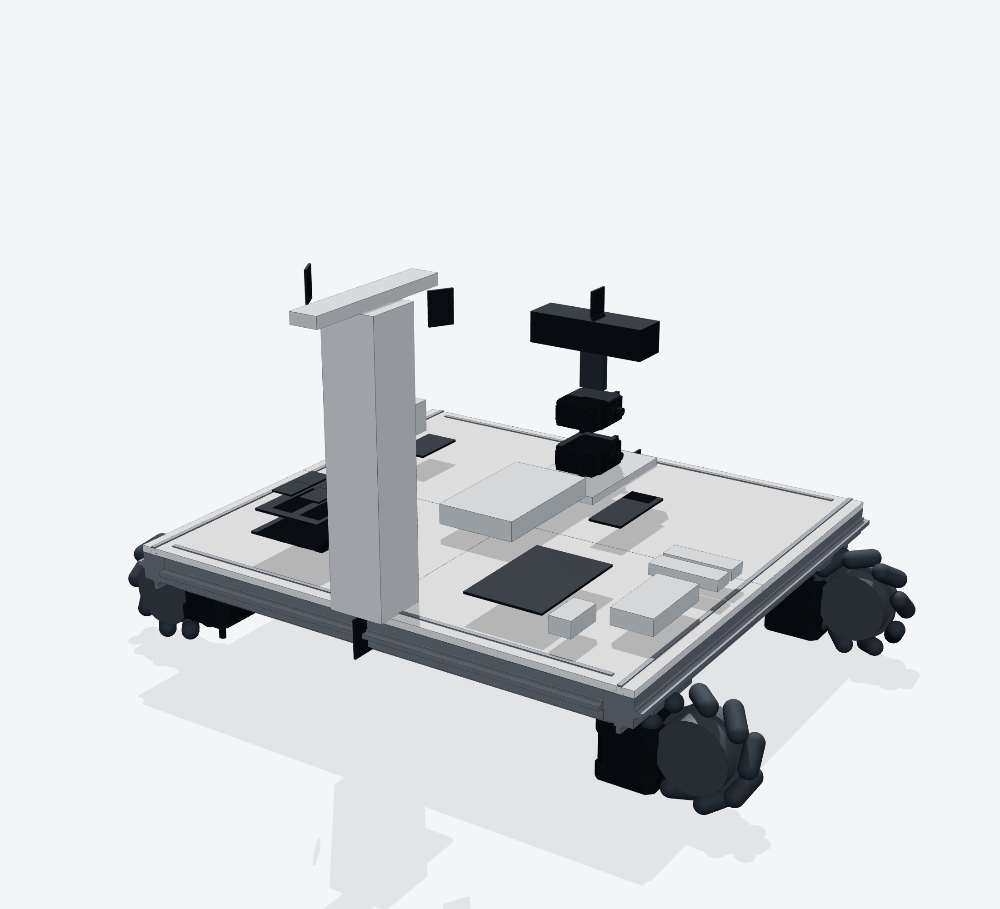
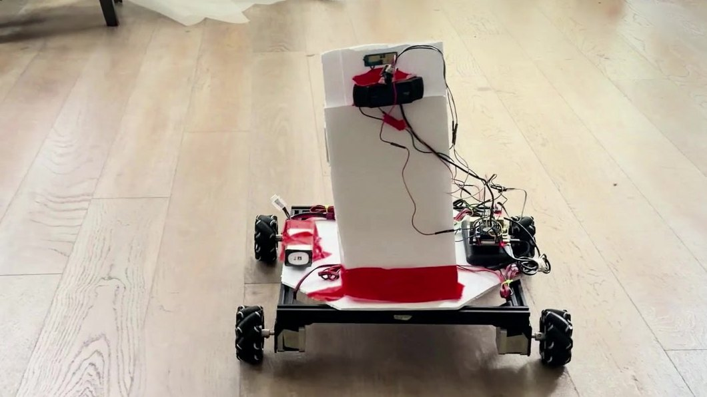

26 August 2026Bhote Koshi valley, Nepal
Is anyone alive
in there?
HOUND is a low-cost rover that drives into buildings that are not safe for people, stops, and listens through the walls with a Wi-Fi neural network. HOUND Command is the console a rescue team would run it from.
A student project. Every result here comes from simulation, and says so.
Illustration, not a photograph of the flood. The flood was real; the search exercise on this site is invented.
After the flood
On 26 August 2026 the Bhote Koshi flooded its valley on the border of Nepal and Tibet. Three weeks later about 1,399 people had been counted dead, and about 5,130 were still missing.
When the water drops, the buildings left standing are the hard part. Someone may be inside. The walls may not hold for whoever goes in to look.
Radar that senses a person through a wall exists. The units rescue teams use cost thousands of dollars. We wanted to know how much of that job cheap parts and a small neural network could do.

It is named after the rescue dog. It stops, goes quiet, and listens.
Illustration of the idea. The real rover, as built, is next.

It goes where people should not, stops, and listens.
-
Built from parts a school lab can buy
An aluminium extrusion frame on four 80 mm mecanum wheels, each driven by a NEMA 17 stepper. It drives forward, sideways and turns on the spot, which is what a doorway full of debris asks for.
- Drive
- 4 × NEMA 17, DRV8825 drivers
- Power
- 3S 2200 mAh LiPo
-
Wi-Fi that feels a body move
One ESP32-S3 sends 100 Wi-Fi probes a second. A second ESP32-S3 on the rover measures how each one arrives on 51 subcarriers. A person in the room changes that pattern. A neural network on the Raspberry Pi reads ten seconds of it.
- Answer
- Person or no one; still or moving
- Window
- 10 s, rover stopped
-
Radar for where, and for the still ones
An HLK-LD2450 24 GHz radar tracks a moving person: x, y and speed. Two HLK-LD2410C radars give range and look for the slow, repeating motion of breathing.
- Position
- From radar. Wi-Fi cannot tell left from right.
-
Heat, sight and distance
An MLX90640 thermal camera, 32 by 24 pixels, sees body heat once a person is in view. A USB webcam shows the operator the room. Two VL53L1X sensors measure the distance to what is ahead and behind.
- Thermal
- 32 × 24 px
- Through walls
- No. Line of sight only.
-
It stops by itself
A Raspberry Pi 4 runs the sensors and the network. An Arduino UNO R4 runs the motors, and cuts them 400 ms after the Pi goes quiet, so a dropped link cannot leave the rover driving.
- Exists today
- The rover and its web remote
- Not yet
- This console is not connected to it

The network is running on your computer right now.
A 1-D convolutional network with 23,372 parameters, written from scratch in NumPy with every gradient derived by hand. The same weights run here in JavaScript. Pick a ten-second Wi-Fi window it has never seen and watch it answer.
Loading the network and 30 test windows (5 MB)
Every window is simulated: a person modelled in Blender, placed behind a wall in a Wi-Fi channel simulator that adds the ESP32's own faults. No window was recorded with the rover. The timing is measured on this computer; the Raspberry Pi has not been timed.
Its true numbers, good and bad
Measured on 955 held-out test windows. The people in them were never seen in training. All of them are simulated.
Why a still person is hard
Breathing changes the Wi-Fi signal by about 0.05 to 0.4 %. The ESP32's own noise is about 0.5 % per bin. The thing we are looking for is smaller than the instrument's error.
The decision that made the network usable
Our first simulator was too clean. The same network trained on clean signals, then tested on messy ones, called 81 % of empty rooms a person. Training on signals with the ESP32's gain jumps, drift, noise and lost packets brought that to 11.1 %.
What it cannot do
It cannot say left, centre or right: 30.1 % where chance is 33 %. Position comes from the radar. Its breathing-rate estimate is within 3 breaths a minute for only 41 % of the still people it finds, so the console never shows one as a reading.
What the design does about the weak case
One sensor that misses four still people in five is not a search tool. Three things around it make it one.
- 1Fuse. The network's answer is combined with radar and thermal by Bayes' rule, one likelihood ratio per reading. A quiet "no one" from Wi-Fi lowers the odds a little; it never closes a room.
- 2Look again. A lead stays open down to 15 %. The rover is sent to a second position for another reading before anyone is told a room is clear.
- 3A person decides. The console plans the route in. It does not move anyone until an operator approves it.
Running the scripted mission to get a worked example
This is the console. The mission below is running, not recorded.
A drone maps the block. The rover drives in, stops at four places and listens for ten seconds at each. A fan and a hot pipe are rejected. Two people are found inside, one outside. A route is planned around the damage and waits for approval.
The mission starts when this section is on screen.
Findings0
- Nothing found yet.
Rooms8 to search
Mission log
The block of buildings, the people, the damage and the radar, thermal and drone readings are invented for a training exercise placed in Timure, Nepal. The Wi-Fi network, the route planner and the fusion arithmetic run for real, in this page. The console only shows what its sensors found; it is never told where the people are.
Twenty-three workspaces around one mission.
Each one does a single job and carries a label that says how real it is. The pictures are captures of the running console, not mock-ups.
We would rather tell you than have you find out.
Six labels are used across the console. Every workspace wears one, and every feature inside it that differs wears its own.
The priority order the console suggests is a planning aid, not a medical assessment. The console reports that a person is likely present. It never reports that someone is alive.
What existed, and what was made for this challenge.
Before 21 November 2026
- The rover. Frame, mecanum drive, wiring, every sensor, the Arduino and ESP32 firmware, the web remote.
- The Wi-Fi neural network. The Blender people, the channel simulator, the training code and the test results on 955 windows.
- An earlier operator console. One flat screen: a satellite map, a route button with approval, sensor panels on simulated readings.
- The project film.
21 to 28 November 2026Global AI Builder's Challenge
- HOUND Command, rebuilt from scratch. A mission simulator, a world model, a hazard-aware route planner and Bayesian fusion, written for this console.
- The network in the browser. The trained weights ported to JavaScript and checked against Python on 30 windows.
- The 3-D operating picture and the workspaces shown above, each with its reality label.
- This page.

- Team
- Rishith Chennupati and teammates
- Entered in
- Global AI Builder's Challenge, 21 to 28 November 2026
- Best viewed
- On a laptop or desktop, in Chrome, Edge or Safari